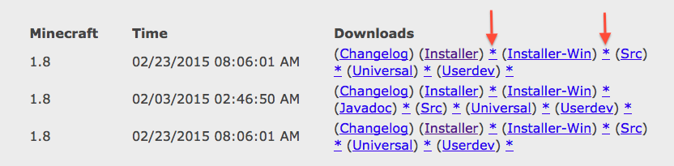

Before you get started, make sure you understand what mods are and you've read the safety tips for downloading them. If you're looking for some good ones to try out, check out this list or this list for some recommendations that you can use to get your feet wet.
And most importantly of all, make a backup copy of any worlds that you already have that you want to keep. There are times when mods can permanently corrupt worlds, so you want to be able to restore them if that happens. To make a backup copy, look for the /minecraft/saves folder - each world will have its own subfolder in there, so take a copy of that and put it somewhere safe before you start modding.
There's really no standard way to install a Minecraft mod because each is created by a different person using different methods. Each mod should come with its own installation instructions, but most assume that you'll follow something like these series of steps.
The easiest way to do all this is by using a mod called Minecraft Forge, but sometimes for whatever reason Forge doesn't load properly or the mods you want to run aren't compatible with it. In those cases it really helps if you have an idea about how to install mods without it, so I'll give you those instructions as well.
In the Downloads column you'll see the names of the different versions (e.g. Installer, Installer-Win, Universal) followed by a link that's an asterisk.
Always pick the link with the asterisk (*) as that's the direct download link that doesn't pass through AdFly first - an ad service that shows you ads before taking you to the download page. These ads sometimes look like legitimate links to trick you into downloading malware, so always use the direct link instead.
If you do land on AdFly, wait five seconds for the counter in the top right hand corner to count down and the SKIP AD link to appear. DO NOT CLICK ON ANYTHING ON THE ADFLY PAGE EXCEPT THE SKIP AD LINK, which will take you to the Forge download page.
Once the file has downloaded (and you've scanned it with your antivirus protection software), double-click to open it and then select 'Install Client'.
Mods can be found all over the internet, with some sources being more reliable than others. These are good places to start:
article first and, as with any file that you download from the internet, exercise extreme caution before clicking on any download link and always run good virus protection on your device.
Forge is in itself a mod, and any mod that you want to install with it needs to be compatible with it. You can find this information in the place where you got the mod (e.g. the forum post with the download link) and in the documentation that you download along with the mod files.
Now all you need to do is copy the entire zip file of the mod into the mods folder that Forge has created in the /minecraft folder. That's it!
Now when you run Minecraft, you'll see the mods that you put in the mods folder listed under the Mods menu option.